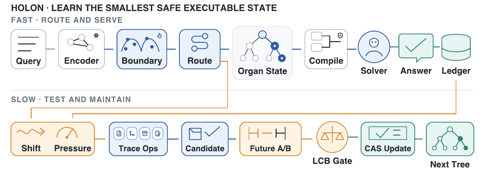
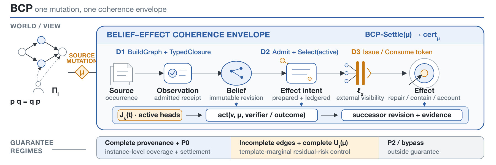
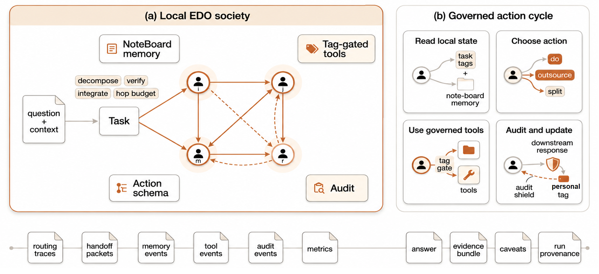

反馈范式会从流式走向非欧图结构
流式反馈是以往技术的核心范式，最自然、也最易采集；但下一步革新更可能发生在非欧的图结构反馈上。 正如线性叠加通过激活函数对空间做非线性扰动，非欧反馈也应由流式反馈经激活函数式的扰动生成； 这种扰动本质上是低维空间对升维操作的一次模仿。
流式反馈是以往技术的核心范式，最自然、也最易采集；但下一步革新更可能发生在非欧的图结构反馈上。 正如线性叠加通过激活函数对空间做非线性扰动，非欧反馈也应由流式反馈经激活函数式的扰动生成； 这种扰动本质上是低维空间对升维操作的一次模仿。
Memory 是对 world 的感知化存储。因为它是有限的，永远无法真正穷尽世界，只能保留对当前 topic 有益的切面； 又因为 world 不断变化，memory 总是在过时。所以最好的方式不是直接复用旧记忆，而是在使用时基于当前世界重建。
压缩、解压缩、重建都是智能形式。压缩让世界变得可表示，解压缩让表示重新展开， 而重建要求系统把碎片还原为结构；重建代表对世界结构的深层认识。
LLM + memory 更像大脑，tools 更像身体，environment 才是世界。 Memory 保存反思和压缩过的经验；environment 保存代码、文档、数据和协作空间中的真实产出。
构建上下文时，人类用注意力圈定什么重要、什么该被暂时忽略。 这也是全自动流程和人机协同的本质区别：上下文不是越多越好，而是要被正确选择。
模型学习的是世界的普遍频率，个人记忆则来自每个人经历过的特异频率。 价值高的事件会触发反思，反思相当于对高价值样本进行迭代压缩和再训练。
代码是智能体沉淀到 environment 中的产出。好的 AI coding 不是大面积生成， 而是在理解项目结构后做最小必要修改，控制代码熵，让系统继续保持可读、可维护、可回滚。
万物皆是频率；人类语言和各种语言是频率，记忆也是频率。频率使物体共现，共现建立链接， 链接产生知识，知识产生智慧；频率同时承担区分作用，划分 0 与 1，也划分相关与不相关。
世界是动态变化的，重要的永远是当前状态与上一个状态的差异。memory 永远是 world 的快照， 所以永远是过时的；perception 永远是过时的。
记忆是 item 复现的结果，记忆即模型，模型即记忆。LLM 学习的是世界频率，所以是 base model； 所谓遗忘，是 session 的频率世界与 LLM 的频率世界之间存在 bias。信息在产生的那一刻就已经过时， 所以记忆是对信息的重构；记忆产生的那一刻，它也就已经过时。
重新审视向量相似度与频率的关系，为每个 session 构建一个频率相似模型，叠加在 base 频率世界之上， 属于非侵入的记忆模块；关键量是惊讶值（山峰）、移动速度与唤醒程度。
做梦是在对当天信息做摄取，并重构当前记忆：删除非必要部分，连接新记忆与现有记忆。 感性占主导时游走范围更大，能发现隐藏关系与深层关系，即非共现频率关系； 理性（频率、语义）与感性（我感相似度、深层相似）两种游走方法远近结合。
拉链 KV Cache（hologram）；因果图谱；仿生分层：主动遗忘、被动归纳、dream。
神经符号结合的智能中，神经指深度学习，指直觉；符号指推理，是因果。 前者属于快思考：直观而快速，但缺乏逻辑；后者属于慢思考：复杂但有逻辑，有推理性，可推导。
第一是关联，第二是干预，第三是反事实。现在几乎所有模型都处于关联层次； 强化学习处于干预层次，有主动改变世界的动作；反事实是更高层次：如果之前修改了某个动作或决策， 现在的情况会发生什么改变。能回答这个问题，才算真正理解因果关系。
不同 agent 组成一个网络，类似蚁群但有分工：每个 agent 在接触任务的过程中更熟悉某类任务。 每个 agent 有一个向量标签代表它擅长的任务，标签由别人给它的评价产生：我的价值不由我自己决定， 而由其他人对我的看法决定。网络动起来之后不需要分配者：每个 agent 自行决定任务是否适合自己， 适合就做，不适合就抛给适合的 agent。
用 GAN 做大模型训练可以赋予其专业属性：评判器可以设计得富有专业性，成为专家领域的评委； 只训练专业的评判器，就可以即插即用地为任何 pre-trained model 赋予专家知识。 这其实是在模拟人和 LLM 的交互，把人的角色替换成了 LLM；因为这个 LLM 领域更精，所以小 LLM 也能有深度。 智能体的联合训练也能考虑 GAN 模式：任务板、交流板、共识板。
开发与算法之间的 gap 比产品和开发之间的 gap 都大。正是二者信息不对等，才导致 AI 落地如此艰难： 这是分工的不好之处，也是协作的必要之处，与多 agent 协同是同一件事。它启发的是： agent 要知道自己能做什么，更要知道自己不能做什么，以及谁能帮助自己完成不能做的事。
给各个 agent 设置一个标准度量衡的中间件，对齐空间和时间感知。
让 LLM 自己说自己的不足，自己说自己想要什么。
告诉 app 我想看什么、怎么看、在什么时候看，而不是让 recsys 来猜。这与 search 本质不同： search 虽然也个性化，但总归要拿到你的 search word；推荐要发现你从未搜索过的、你感兴趣的事。 这里告诉 recsys 的并非关键词，而是一种粗略意图。当前 app 推荐有两个问题：记忆过重， 学习到用户兴趣后往往锁在这里，而用户兴趣漂移较大；沟通过轻，从用户收到的信息只是简单二元操作， 纠正需要大量二元操作。
从「训一个大模型」转向「先训多个专家，再蒸馏合并」：数学、代码、Agent 各自做专家化 RL， 再通过 OPD / MOPD 把能力压回统一模型。在线蒸馏开始成为 RL 之外的重要高效路线， 教师可以逐 token 给密集反馈。Test-time compute 成为新的能力扩展方向。 RLVR 从「堆 rollout」转向「会训练」。SFT 不再只是 RL 的 warm start。好数据，算法暂时替代不了。
为什么现在的 fine-tune 都是 QA 形式，不应该是 pair 形式才对吗。LLM 到达上界的一个重要原因是 它用完了全世界的数据；后续要提升，只能优化利用数据的方法，更深度地利用数据。
生成与判断是两个复杂度完全不同的任务，可以打一个能力差，螺旋上升。
policy、perception、world knowledge、value function。perception 在一定程度后转化为 value function： 前者可看作短期记忆，后者是长期记忆；value function 可看作对 final target 的拆解， 能对下一步 action 做 value 评估就代表能做任务拆解。policy 根据 value function 做判断： 可以完全做 value 高的，但也要有 exploration，policy 就是做这个平衡的。
好的 benchmark 一定是可解释的，是世界的一个切面：在这个 benchmark 上做世界的投影， 然后提升 agent 在具体任务上的能力。agent 的能力维度包括推理、记忆和工具调用；领域 topic 是题眼； 需要细粒度判分规范作为能力指标；题目得分不应该太好，给自进化留出空间。 打分要求可重复与可比较，首先排除 llm-judge；信号要稠密且连续，要求 agent 的结果是结构化的。 作弊指调用本身可以直接获得答案的工具来绕过多轮推理；凭记忆直接写答案不算作弊， 因为记忆本质上也是 agent 能力的一部分。
传统推荐把点击压进长期兴趣向量，默认偏好稳定、越多利用越好；但自然语言场景中同时存在临时任务、硬约束、误触与撤回。 这篇 position paper 把“偏好状态由谁治理”设为推荐系统的一等问题：每条偏好显式携带 provenance、scope、lifecycle、confidence 与 disclosure policy， 系统在 ask / recommend / wait / abstain 间选择主动程度，用户可检查、暂停、纠正与撤回。
Keywords: user-governed preference memory; calibrated initiative; recommender systems.
边界：这是 position paper，可核验产物是 PreferenceMemoryRecord v0 JSON Schema、validator 与 benchmark / 架构 / 报告议程；没有用户研究、长期满意度或线上 A/B。
研究一个长期运行的 persistent agent 如何在不断接收局部规则、工具与记忆时长出可复用的“器官状态”，而不破坏已服务过的查询。 能力被组织为单父的 Organ State Tree，每个节点是“作用域 + 可执行状态增量 + 统计量”；回答请求走只读 fast path，修改持久状态走可审计、可回滚的 slow path。 新结构必须先通过 Legal / Mature / Guard / Gain-over-NoOp 四道门，并在请求边界原子提交，线上回归时追加 rollback。
Keywords: single-agent self-evolution; compatibility governance; organ state tree.

边界：当前方法契约为 design-locked，端到端实验结果尚未产生；旧版本 906-task 数值来自不同对象与旧协议，不作为当前结果。
多 Agent 在共享证据被更新后，容易产出混合了互不相容证据版本的外部动作（发邮件、下单、提交代码或写库）。 本工作不追求文本层面的“意见一致”，而是保护“证据版本 → belief → 外部 effect”的可审计因果链：每次证据消费开具 receipt， 源对象被 supersede 时沿真实依赖边做 mutation closure 并逐个 revalidate；真正提交前由后端一次性核对完整证据版本集合、scope epoch 与内容指纹， 证明不了就阻断或降级，超时用 idempotency key 查证以避免重复 effect。
Keywords: multi-agent coordination; belief coherence; trace monoid; auditable effects.

边界：method contract 为 accepted / locked、预注册已冻结，真实证据阶段待完成；没有当前协议的结果数字，旧 lane / pointer 或 SWE 类实验不移植。
多 Agent 推理常在开局手工指定“研究员 / 批评家 / 总结者”，或由中央调度器永久决定分工，在任务分布变化时失配。 EDO 让角色从可审计贡献中形成：Agent 先做工作并提交带 artifact 的 claim，系统据被接受的贡献、返工、及时性、分解与整合帮助更新其 7 维 persona； 后续委派只在一跳邻居、预算与权限范围内使用这些证据。persona 影响路由但不替代工具权限，未经审计的自我评价权重为零。
Keywords: multi-agent reasoning; emergent roles; credit assignment; auditable contribution.

边界：方法与表中数字属 paper-reported；本机没有与论文版本对应的完整框架源码，可按论文复现，不声称已开源或已在本机跑通。
Multimodal Large Language Models remain text-native autoregressive systems: visual evidence conditions the hidden state, but token admission is still decided one step at a time. Hallucination can therefore emerge as a short-horizon decoding failure, where a locally plausible token enters the prefix before robust visual grounding is established. CHORD evaluates candidate tokens with three coordinated signals: a past signal for rollback-based protection, a current signal measuring query-conditioned visual support, and a future signal probing short-horizon continuation through bounded rollout. It is evaluated on POPE, CHAIR, and MMBench with LLaVA-1.5 and InstructBLIP, contrasting a latency-efficient Past+Current variant against Full CHORD; final results are being consolidated.
Keywords: Hallucination Mitigation; Decode-Time Verification; Visual Grounding.

边界：CHORD 是 inference-time control，不是训练时对齐；它更适合 object-related hallucination，且依赖 visual anchors 与额外 decoding compute。
Frozen text-to-CF alignment often preserves semantic proximity while collapsing recommendation roles: substitutes, same-routine companions, and off-target items may appear in one neighborhood. This work asks whether typed structure is already recoverable at scoring time, before paying for another training-time specialization pipeline. TypedSmoke subtracts a family-mismatch penalty from frozen BaseAlign scores, and is evaluated against higher-capacity typed variants and as a plug-in on five published backbones.
Keywords: relation collapse; item cold-start; frozen text embeddings; post-scoring correction.

| Method | Recall@20 ↑ | NDCG@20 ↑ | FMR-self@20 ↓ |
|---|---|---|---|
| BaseAlign | 0.0385 | 0.0138 | 0.4690 |
| RandomNeg | 0.0225 | 0.0077 | 0.8239 |
| TypedSmoke | 0.0430 | 0.0158 | 0.0226 |
| FamilyAlign | 0.0375 | 0.0154 | 0.1522 |
| FamilyRoleAlign | 0.0370 | 0.0157 | 0.0810 |
边界：FMR-self 是 typed proxy，不是完整 substitutability gold label；论文用 FMR-leaf audit 与跨 backbone 检查减轻 self-consistency 风险。
Conversational recommenders often stop through fixed budgets or scalar confidence thresholds, which cannot distinguish a truly resolved slate from one that only looks confident. SSE-Stop tracks a calibrated slate-support envelope around the Top-K boundary and fires when that envelope contracts to capacity. The result is a lightweight stop layer with an explicit failure mode, saturation collapse, and a falsifiable scope condition on score-distribution shape.
Keywords: conversational recommender systems; stopping criteria; conformal prediction; early stopping.

| Partition | Policy | SR ↑ | Trigger |
|---|---|---|---|
| Easy | SSE-Stop | 0.404 ± 0.055 | 0.816 ± 0.108 |
| Easy | top1-softmax | 0.428 ± 0.037 | 0.834 ± 0.028 |
| Hard | SSE-Stop | 0.115 ± 0.015 | 0.795 ± 0.118 |
| Hard | top1-softmax-std | 0.071 ± 0.009 | 0.984 |
边界：SSE-Stop wraps a score-based frontend; generative LLM-ranker swaps break the monotone-affine score premise, so the claim is scoped rather than universal.
达摩院（阿里巴巴） · Agent 算法实习 · 2026.06 - 至今
达摩院（阿里巴巴） · Agent 算法实习 · 2026.06 - 至今
达摩院（阿里巴巴） · Agent 算法实习 · 2026.06 - 至今
SMEE 突破小组 · 大模型搜索应用算法实习 · 2025.10 - 2026.05
SMEE 突破小组 · 大模型搜索应用算法实习 · 2025.10 - 2026.05
SMEE 突破小组 · 大模型搜索应用算法实习 · 2025.10 - 2026.05
MiniMax · 大模型推荐算法实习 · 2025.06 - 2025.09
MiniMax · 大模型推荐算法实习 · 2025.06 - 2025.09
MiniMax · 大模型推荐算法实习 · 2025.06 - 2025.09
字节跳动 · Agent Search 研发实习 · 2025.01 - 2025.06
字节跳动 · Agent Search 研发实习 · 2025.01 - 2025.06
万物智灵（One Ling） · AI 教育创业 · 2025.12 - 至今
创业项目 · 2025.11 - 至今
个人项目 · 2025.12
个人项目 · 2026.05
本科项目 · 厦门大学
本科项目 · 厦门大学
本科科研 · 厦门大学
本科科研 · 厦门大学 ASTL 实验室 · 2023.09 - 2024.02
本科科研 · 厦门大学